Guía de uso de ApiDental
Cómo trabajar en el panel de la clínica según su rol: qué ve, qué puede hacer y cómo hacerlo, con capturas de la versión demo. Los pacientes, citas y montos de las capturas son ficticios.
Primeros pasos
Ingresar
- Abra
https://dental.apiworking.com.pe/admin/en su navegador. - Escriba su correo y su contraseña. Con «Mostrar contraseña» puede comprobar lo que escribe.
- Pulse Ingresar.
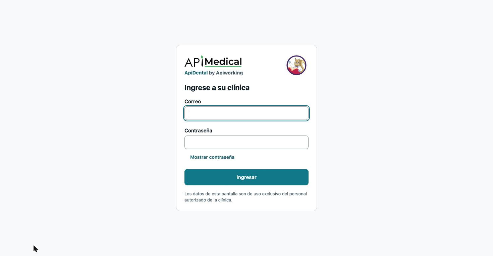
Elegir dónde trabaja
Si su usuario tiene más de una clínica o sede, aparece esta pantalla. Elija una. Para cambiar más tarde use Cambiar sede, abajo a la izquierda del menú.
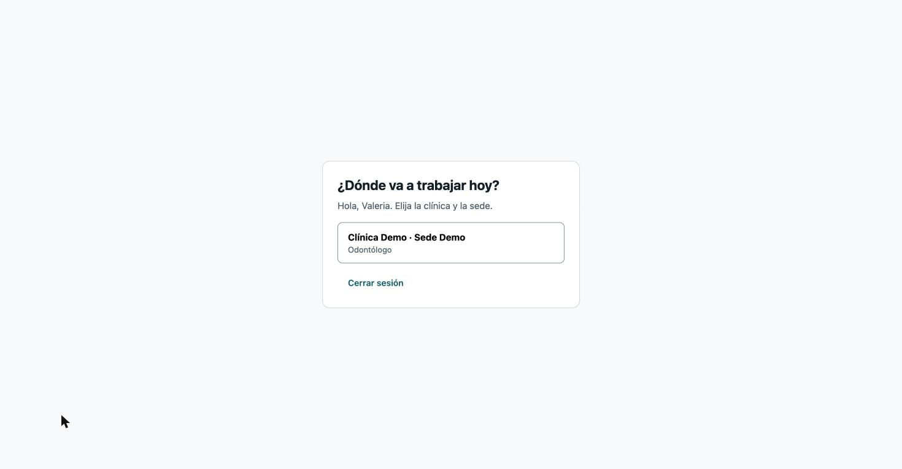
Cómo está organizada la pantalla
- Menú de la izquierda. Solo muestra lo que su rol puede usar, por eso cada persona ve opciones distintas.
- Barra amarilla «DEMO — NO VÁLIDO PARA SUNAT». Indica que cobros, comprobantes, puntos y reseñas son una simulación con datos ficticios. Nada se envía a SUNAT ni a Apiworking. Siempre está visible.
- Cerrar sesión, abajo a la izquierda. Ciérrela siempre en equipos compartidos.
Cuando aparece «Acceso denegado»
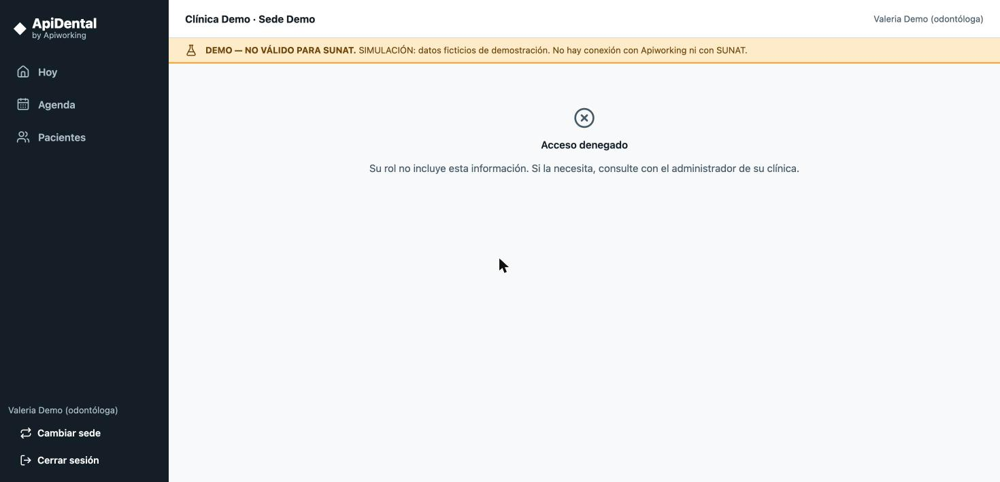
Significa que su rol no puede ver esa pantalla. No es un error. Si necesita ese acceso, consulte con el administrador de su clínica.
Qué puede hacer cada rol
El menú solo muestra lo que su rol permite. Esta tabla resume los permisos del panel actual.
| Rol | Agenda | Pacientes | Historia clínica y odontograma | Caja | Comprobantes | Fidelización |
|---|---|---|---|---|---|---|
| Recepción | Gestiona | Datos completos y alta | No | Cobra | Ve | Ve |
| Odontólogo | Ve e inicia la atención | Lectura | Sí, de sus pacientes | No | No | No |
| Asistente | Ve | Datos básicos | No | No | No | No |
| Director clínico | Ve | Lectura | Solo por la API, con justificación | No | No | No |
| Cajero | Ve | Datos básicos | No | Cobra | Emite y concilia | Canjea puntos |
| Administrador de clínica | Gestiona | Datos completos y alta | No | Cobra | Emite y concilia | Canjea puntos |
| Administrador de plataforma | No | No | No | No | No | No |
Recepción Cuenta demo: recepcion.demo@apidental.test
Agenda, citas, datos del paciente y cobros.
Recepción organiza la agenda, mantiene los datos del paciente y cobra la atención.
1. Revisar el día
La pantalla Hoy resume las citas del día: cuántas hay, cuántas faltan por confirmar y las ausencias. Los nombres de la lista abren la ficha del paciente.
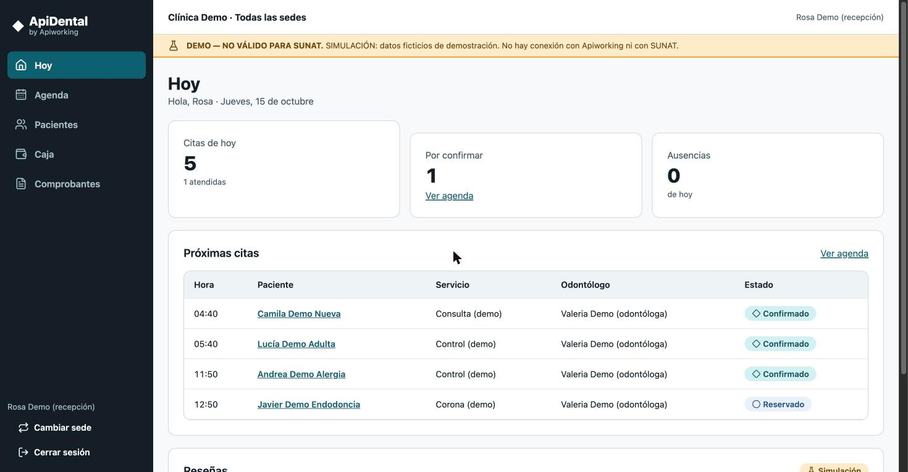
2. Ver la agenda
En Agenda elija la fecha, la vista (día o semana en lista) y el odontólogo. Cada cita muestra la hora, el paciente, el servicio, el consultorio y su estado.
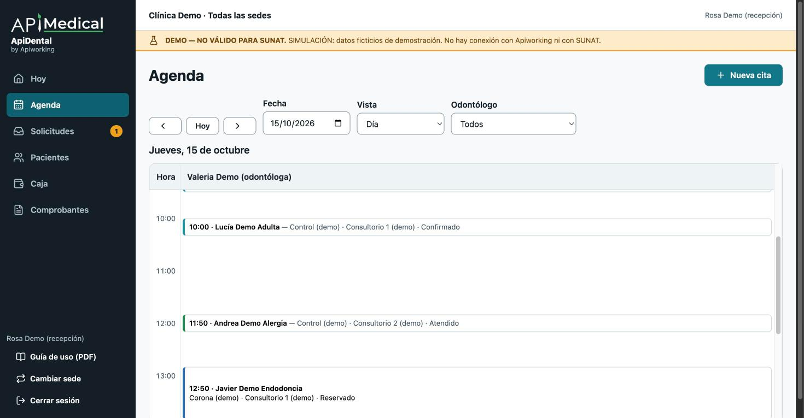
3. Reservar una cita
- Pulse Nueva cita (en la agenda o en la ficha del paciente).
- Busque al paciente por DNI, nombre o celular (mínimo 2 caracteres) y elíjalo.
- Elija servicio, odontólogo y fecha. Aparecen los horarios disponibles; elija uno.
- Si hace falta, agregue una nota administrativa y pulse Reservar cita.
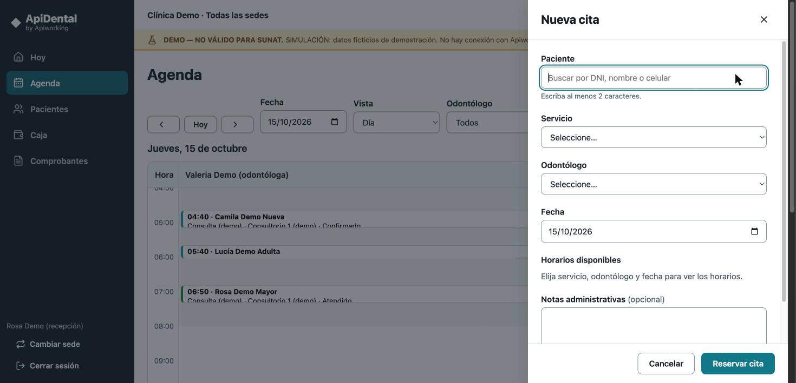
Si el paciente todavía no está registrado
Si la búsqueda no encuentra a nadie, aparece Crear paciente nuevo en la misma lista. No necesita salir de la cita.
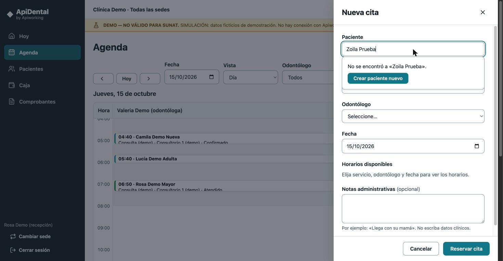
- Pulse Crear paciente nuevo. El formulario se abre encima de la cita, con lo que ya escribió (nombres, DNI o celular).
- Complete nombres y apellido paterno (obligatorios). El resto es opcional: documento, apellido materno, fecha de nacimiento, sexo, celular y correo.
- Pulse Crear paciente. Queda elegido en la cita y puede seguir con el servicio, el odontólogo y el horario.
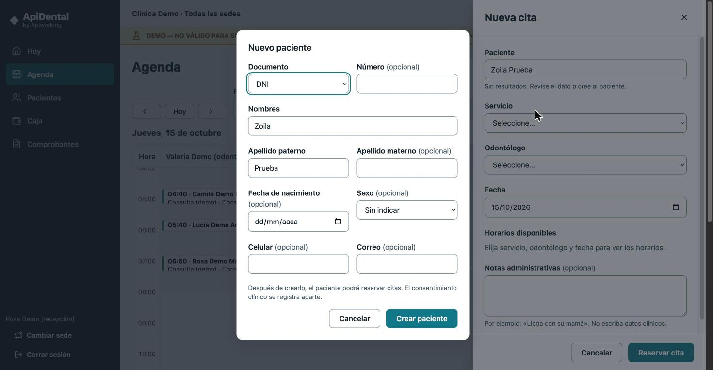
Antes de crear, el sistema revisa si la persona ya existe:
- Mismo documento: no crea otra ficha. Le ofrece Usar a este paciente.
- Nombre, celular o correo parecidos: le muestra a quién se parece. Elija Usar a este paciente si es la misma persona, o Crear de todos modos si es otra.
4. Gestionar una cita
Pulse una cita de la agenda para abrir su detalle.
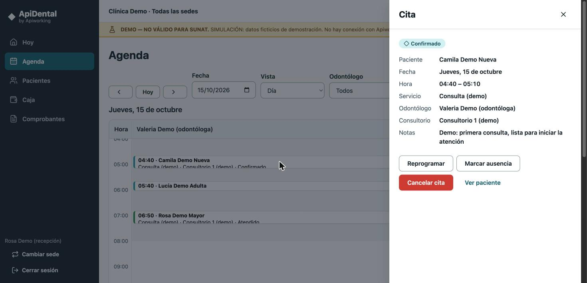
- Confirmar: cuando el paciente avisó que viene. Pasa de «Reservado» a «Confirmado».
- Reprogramar: elija otro horario disponible. La cita guarda cuántas veces se movió.
- Cancelar cita: pide un motivo (mínimo 3 caracteres).
- Marcar ausencia: disponible desde la hora de inicio, si el paciente no llegó. Pide un motivo.
- Ver paciente: abre su ficha.
Estados de una cita: Reservado → Confirmado → Atendido. También puede terminar en Cancelado o Ausente.
5. Buscar al paciente y ver su ficha
En Pacientes busque por DNI, nombre o celular y pulse el nombre.
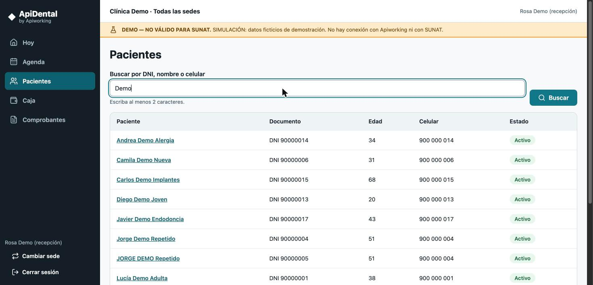
La ficha reúne la identificación, las citas y la tarjeta de fidelización simulada con su saldo de puntos.
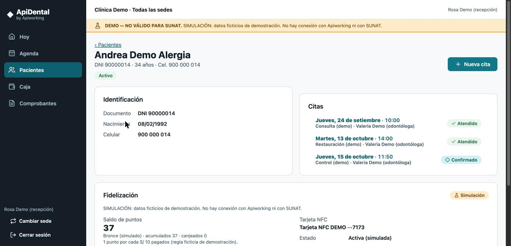
Registrar un paciente nuevo
En Pacientes pulse Nuevo paciente (arriba a la derecha). Si busca a alguien que no existe, también aparece el botón Crear a «nombre» y el formulario ya viene con lo que escribió.
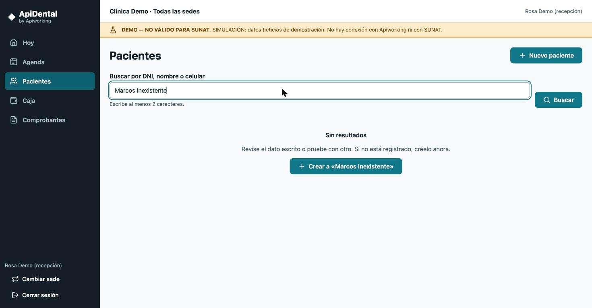
El formulario y las revisiones de duplicados son los mismos que al reservar una cita. Al terminar se abre la ficha del paciente nuevo.
6. Cobrar una atención
- Cuando el odontólogo atendió la cita, ábrala en la agenda y pulse Registrar cobro. También puede entrar por Caja y elegir el cobro pendiente.
- En Caja verá todos los cobros con su fecha, paciente, concepto, monto y estado.
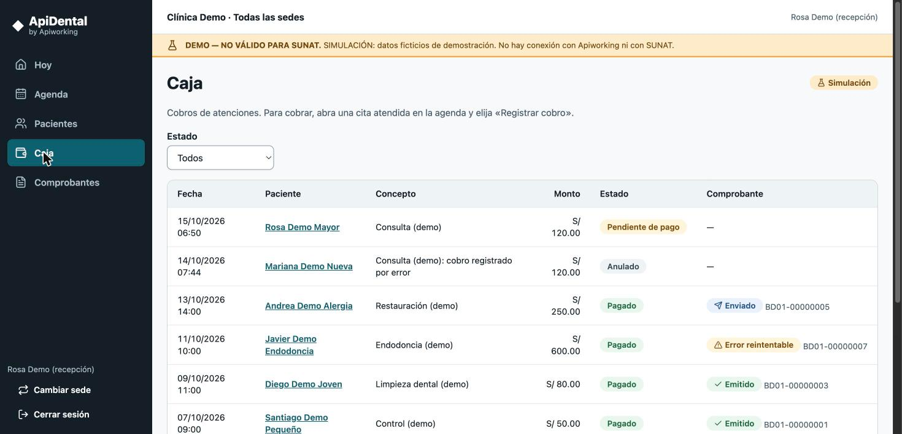
- Abra el cobro pendiente.
- Elija el medio de pago: efectivo, tarjeta, transferencia o Yape/Plin.
- Pulse Registrar pago.
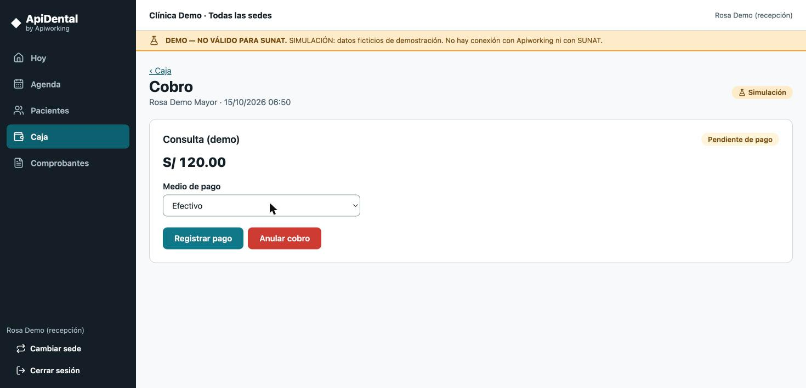
7. Ver el comprobante
Al pagar, se encolan los puntos de fidelización y la solicitud de reseña (simulados). El comprobante aparece debajo del cobro, siempre con la marca «DEMO — NO VÁLIDO PARA SUNAT».
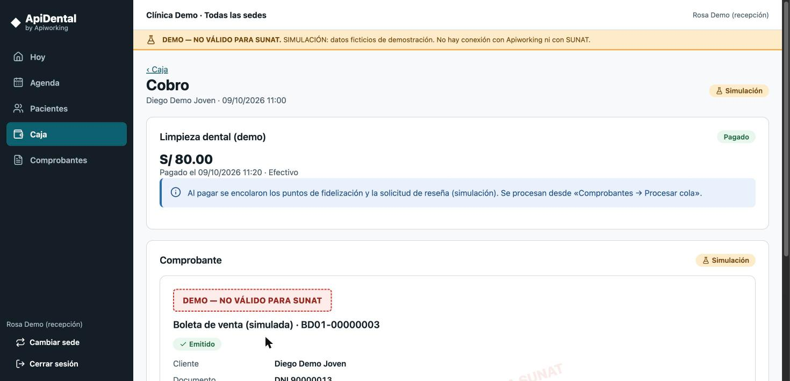
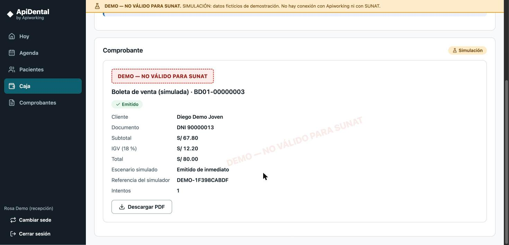
En Comprobantes está la lista de todos los emitidos, con su estado.
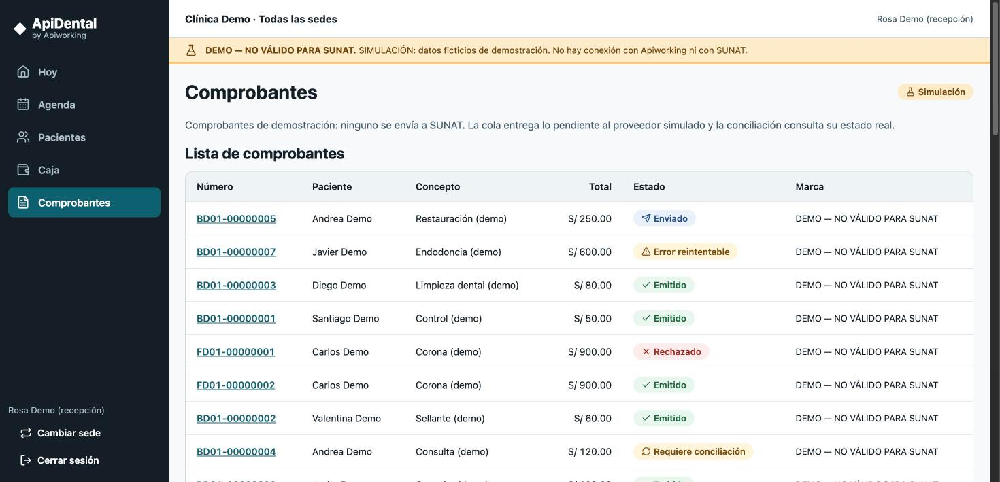
Abajo está la cola de integraciones: lo que quedó pendiente de enviar (comprobantes, puntos y reseñas) y qué pasó con cada tarea.
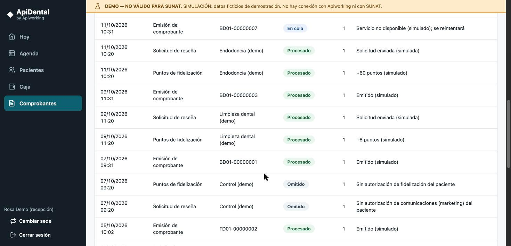
Odontólogo Cuenta demo: odontologa.demo@apidental.test
Atiende a sus pacientes y registra el odontograma.
El odontólogo atiende a los pacientes con los que tiene relación asistencial vigente y registra el odontograma. Solo ve la historia clínica de esos pacientes.
1. Revisar el día
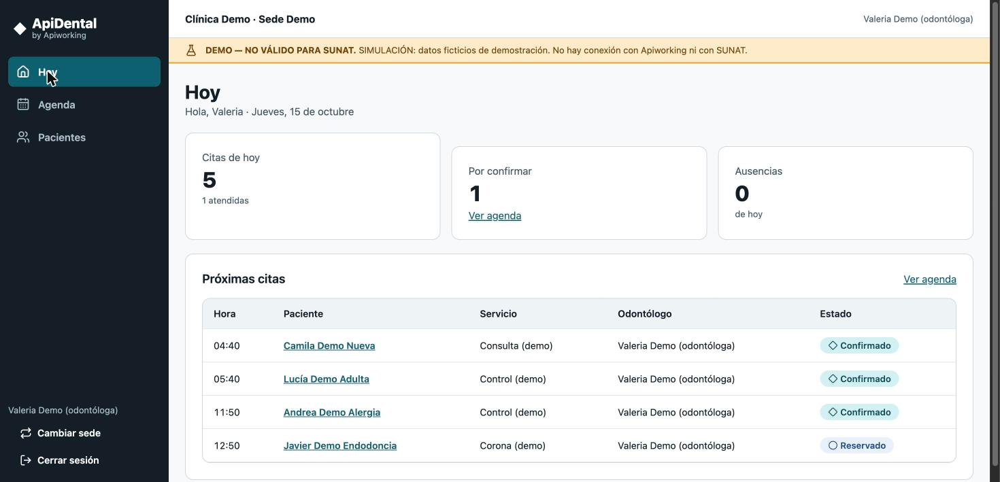
2. Iniciar la atención
- En Agenda abra la cita del paciente.
- Pulse Iniciar atención. Se abre una visita clínica y la cita pasa a «Atendido».
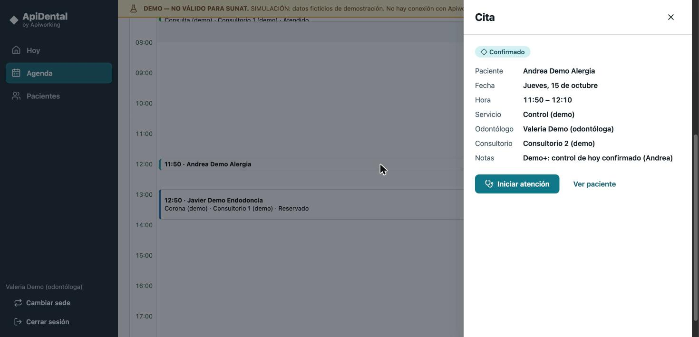
3. La ficha de atención
Arriba aparecen las alertas del paciente: alergias registradas, avisos y si tiene consentimiento clínico vigente. Léalas antes de empezar.
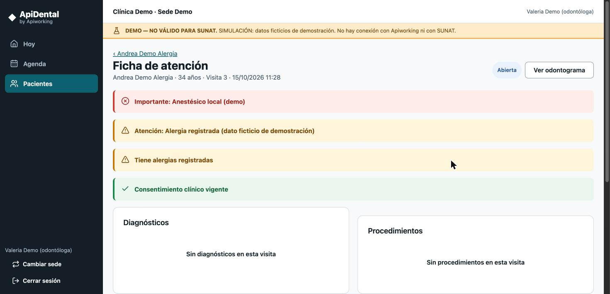
Más abajo están los diagnósticos, los procedimientos, la evolución y el resumen del odontograma de la visita.
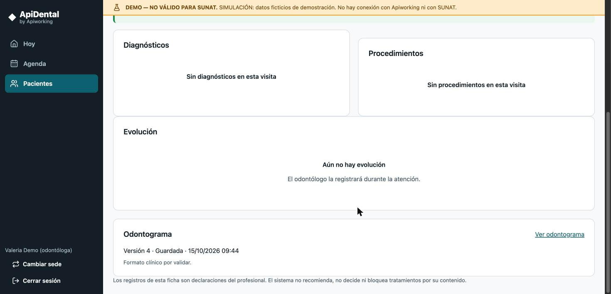
4. Registrar el odontograma
Desde la ficha pulse Ver odontograma, o entre por la ficha del paciente. Según el caso verá:
- Iniciar odontograma: si el paciente no tiene ninguno.
- Actualizar odontograma: abre un borrador nuevo a partir de la última versión guardada.
- Corregir la versión guardada: para corregir un error. Pide el motivo y, al guardar, su contraseña.
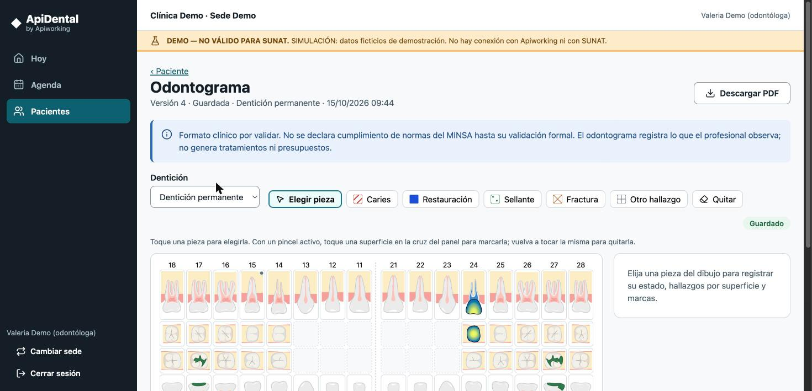
Cada pieza (numeración FDI) se dibuja con su raíz y, en premolares y molares, su cara oclusal. Para marcar:
- Toque una pieza para elegirla. Se abre su panel a la derecha.
- Elija un pincel (Caries, Restauración, Sellante, Fractura u Otro hallazgo) y toque una superficie en la cruz del panel: V vestibular, L lingual o palatina, M mesial, D distal, O oclusal o incisal.
- Para quitar un hallazgo, toque la misma superficie otra vez o use el pincel Quitar.
- En el panel también puede indicar el estado de la pieza (presente, ausente, sin erupcionar, implante o resto radicular), las marcas (corona, endodoncia, prótesis) y una nota.
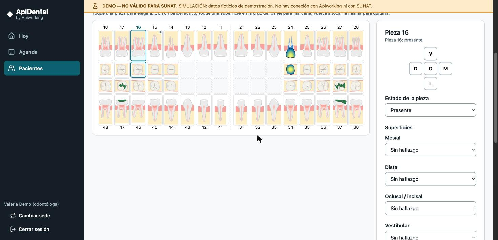
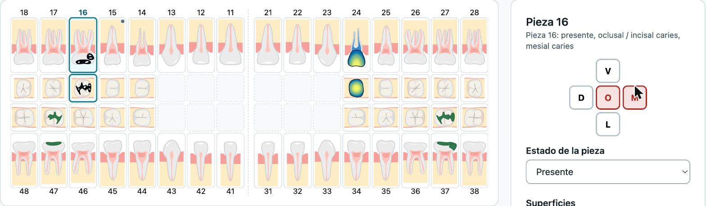
- Dentición: cambie entre permanente, temporal y mixta con el selector de arriba.
- Se guarda solo. El indicador «Guardado» confirma que el borrador está a salvo. No necesita pulsar nada para no perder el trabajo.
- Con las flechas del teclado puede moverse entre piezas y con Enter elegirla.
5. Guardar la versión
Al terminar, escriba las notas generales si las hay y pulse Guardar versión. La versión queda inmutable: no se puede cambiar. Para modificar algo después, se abre otra versión y se conserva el historial completo.
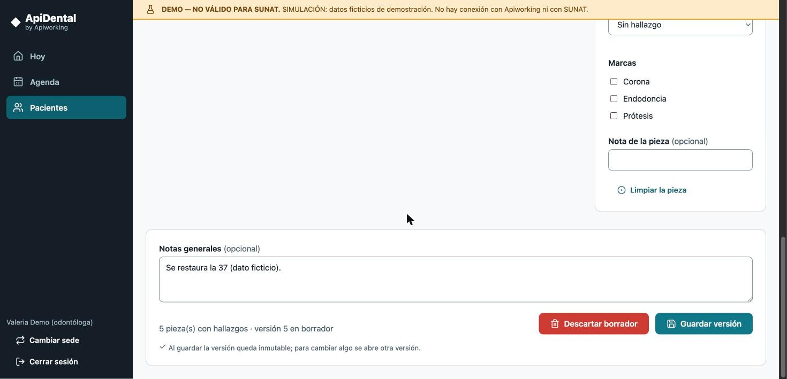
Si abrió el borrador por error, pulse Descartar borrador: pide un motivo, y la última versión guardada no cambia.
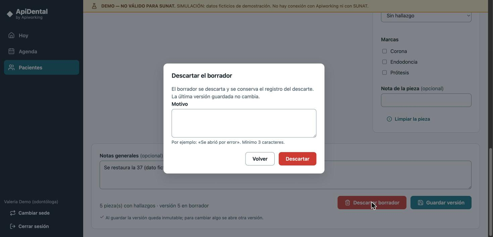
6. La ficha del paciente
En Atención clínica están todas las visitas del paciente, abiertas o cerradas, con acceso directo a cada ficha y al odontograma.
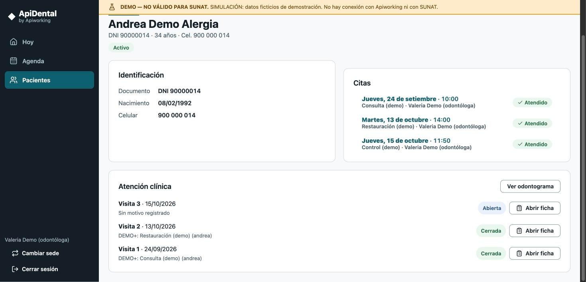
Asistente Cuenta demo: asistente.demo@apidental.test
Apoyo: consulta la agenda y los datos básicos.
El asistente apoya la atención. Consulta la agenda y los datos básicos de los pacientes.
En la ficha del paciente ve su identificación y sus citas. La historia clínica, la evolución y el odontograma no están disponibles para este rol.
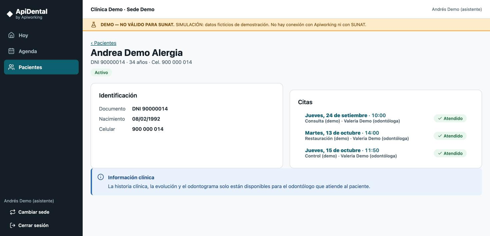
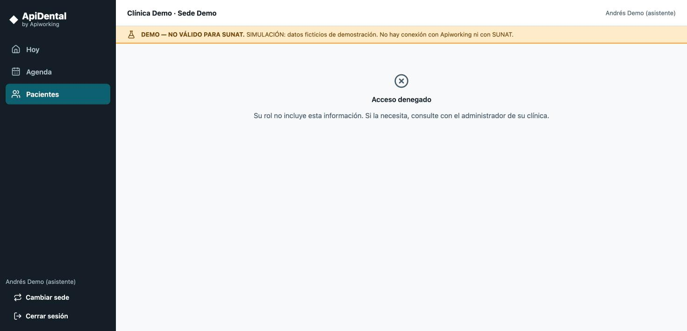
Director clínico Cuenta demo: director.demo@apidental.test
Autoridad clínica de la clínica; consulta agenda y pacientes.
El director clínico es la autoridad clínica de la clínica. En el panel consulta la agenda y los datos de los pacientes.
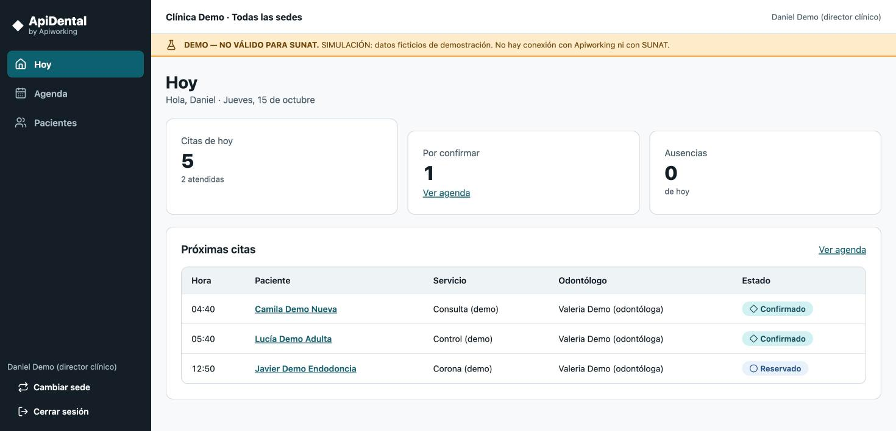
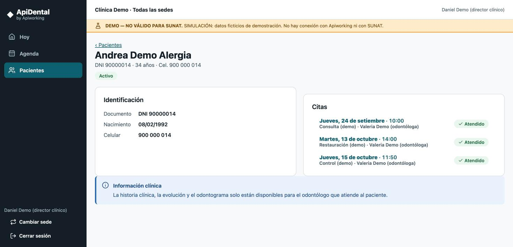
Cajero Cuenta demo: cajero.demo@apidental.test
Caja, comprobantes y puntos de fidelización.
El cajero registra los pagos, emite y concilia los comprobantes simulados y canjea puntos de fidelización.
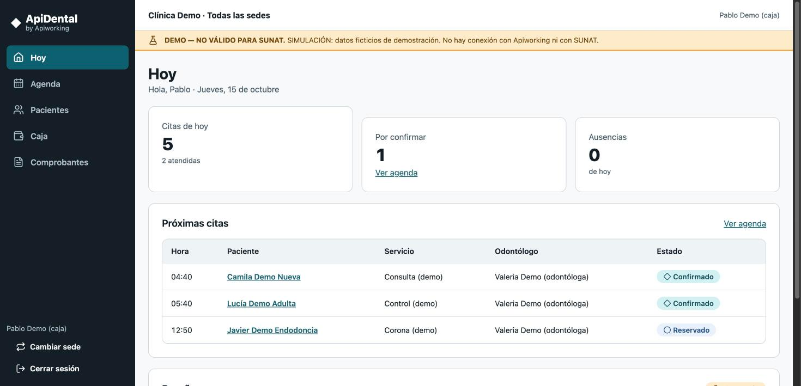
1. Cobrar
En Caja están todos los cobros. Abra un cobro pendiente, elija el medio de pago y pulse Registrar pago. Es el mismo flujo que en Recepción (ver la pantalla de Caja allí).
2. Emitir el comprobante simulado
- Abra un cobro pagado que aún no tenga comprobante.
- Elija Boleta o Factura. La factura pide un RUC de 11 dígitos y la razón social, ambos ficticios.
- Elija el escenario de simulación: emitido de inmediato, pendiente, rechazado o con reintento. Sirve para mostrar cómo responde cada caso.
- Pulse Emitir comprobante simulado.
El comprobante nace con la marca «DEMO — NO VÁLIDO PARA SUNAT», un número correlativo y un estado.
3. Comprobantes, cola y conciliación
En Comprobantes el cajero tiene dos botones que Recepción no ve:
- Procesar cola: entrega al proveedor simulado lo pendiente (comprobantes, puntos y reseñas).
- Conciliar pendientes: consulta el estado real de los comprobantes que quedaron «Enviado» o «Requiere conciliación».
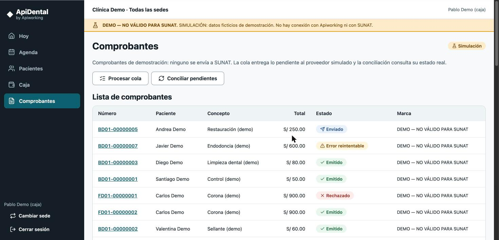
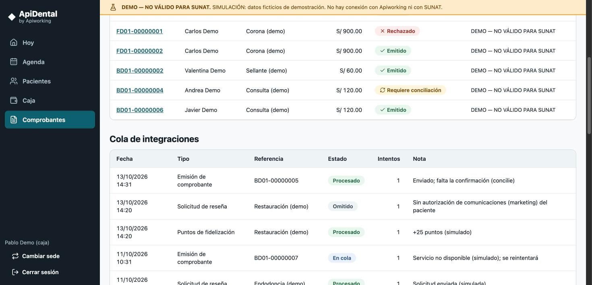
Qué significa cada estado de comprobante
- Emitido: aceptado por el proveedor simulado.
- Enviado: se envió y falta la confirmación. Use Conciliar.
- Requiere conciliación: no se sabe el resultado. Use Conciliar.
- Error reintentable: falló por algo temporal. Use Reintentar en el detalle del cobro.
- Rechazado: el proveedor simulado lo rechazó y muestra el motivo.
4. Canjear puntos
En la ficha del paciente, la tarjeta Fidelización muestra su nivel, su saldo y el estado de su tarjeta NFC (simulada). Si el cajero está autorizado, escriba los puntos en Canjear puntos y pulse Canjear. Un paciente solo acumula puntos si autorizó la fidelización.
Administrador de clínica Cuenta demo: admin.dev@apidental.test
Todo lo de recepción y caja, más la administración de su clínica.
El administrador de clínica tiene el mismo panel que Recepción y Caja juntos: agenda, pacientes, cobros, comprobantes y fidelización. Además administra a las personas de su clínica.
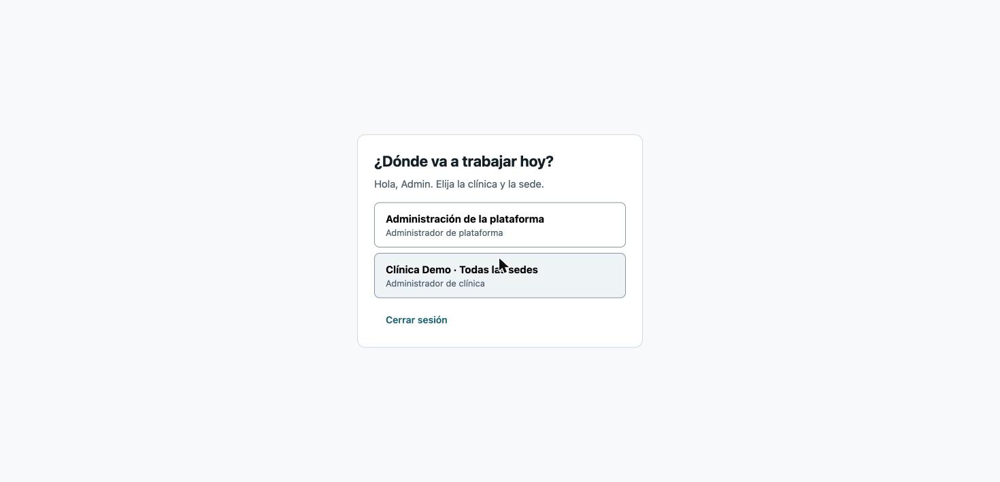
Para las tareas del día siga las guías de Recepción y Cajero.
Administrador de plataforma Cuenta demo: admin.dev@apidental.test
Opera la plataforma. No ve datos de pacientes.
El administrador de plataforma opera la plataforma. Por diseño no tiene acceso a datos de pacientes. Si el mismo usuario también administra una clínica, elija esa asignación al ingresar o con Cambiar sede.
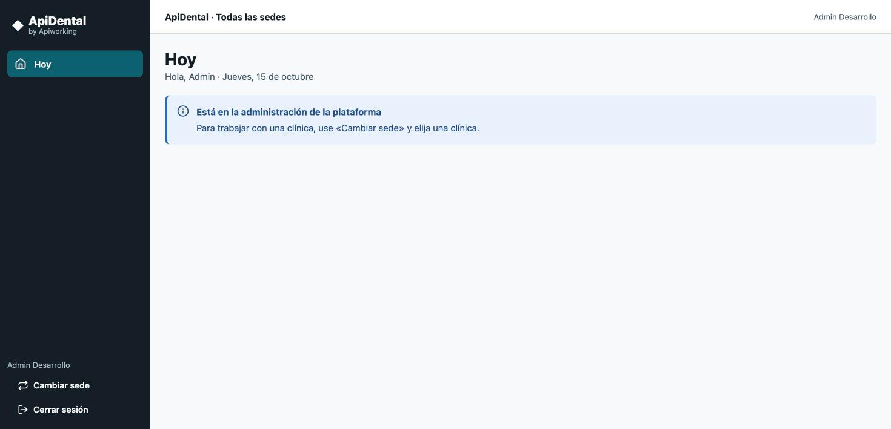
Preguntas frecuentes
No veo el botón «Iniciar atención».
Solo aparece para el odontólogo de la cita, desde 30 minutos antes de su hora y hasta 6 horas después de terminar, y mientras la cita no esté cancelada ni marcada como ausencia.
Me aparece «Acceso denegado».
Su rol no incluye esa pantalla. Consulte la tabla de roles. Si la necesita, pida el cambio a su administrador.
Mi sesión se cerró sola.
Por seguridad la sesión caduca. Ingrese de nuevo. En equipos compartidos use siempre Cerrar sesión.
No encuentro al paciente.
Busque por DNI, nombre o celular con al menos 2 caracteres. Si no existe, recepción puede crearlo desde Pacientes o desde la propia cita con «Crear paciente nuevo». Los demás roles deben pedírselo a recepción.
Al crear un paciente me dice que ya existe.
Otra ficha tiene el mismo documento, o se parece por nombre, celular o correo. Use «Usar a este paciente» para no duplicar. El sistema nunca fusiona fichas por su cuenta.
Un comprobante dice «DEMO — NO VÁLIDO PARA SUNAT».
Es correcto. Esta versión simula la facturación para mostrar el flujo. No hay conexión con SUNAT ni con Apiworking, y esos comprobantes no tienen validez tributaria.
Un comprobante quedó en «Error reintentable» o «Requiere conciliación».
Es un caso previsto. Pida a Caja que use Reintentar o Conciliar. Nada se duplica.
Guardé un odontograma con un error.
Una versión guardada no se modifica. Abra «Corregir la versión guardada», indique el motivo y confirme con su contraseña. Queda el historial de ambas versiones.
Lo que todavía no está en el panel
Estas funciones existen como objetivo del producto, pero no están disponibles en esta versión o se usan por la API:
- Editar los datos de un paciente ya creado, y registrar consentimientos, representantes y adjuntos desde el panel (hoy por la API).
- Registrar diagnósticos, procedimientos y evolución desde el panel (hoy en solo lectura).
- Planes de tratamiento, presupuestos, cuotas y saldos.
- Apertura y cierre de caja, pagos parciales y cuentas por cobrar.
- Reportes y tablero de gestión.
- Recordatorios por WhatsApp o SMS y confirmación de asistencia por el paciente.
- Letreros NFC y métricas de reseñas, tarjeta en Wallet, cumpleaños y referidos.
- Administración de usuarios, sedes e invitaciones desde el panel.
Versión demostrativa: cobros, comprobantes, puntos y reseñas son simulaciones con datos ficticios, sin conexión con SUNAT ni con Apiworking. El formato clínico del odontograma está por validar.